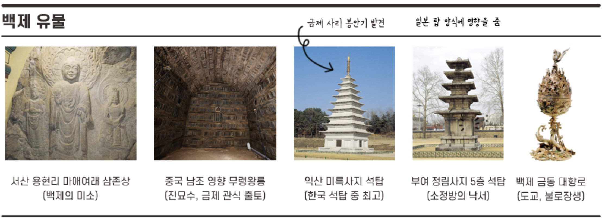

고구려
고구려(전성기 5C)
기원전 37년 ~ 기원후 668년
고구려는 B.C 37년 부여에서 내려온 주몽이 졸본에서 세력을 키워 나라를 세웠습니다. 고구려는 나당연합에게 멸망하기 전까지 주몽(동명왕)을 포함하여 총 28명의 왕이 고구려를 다스렸으나, 요약정리에서는 한국사능력검정시험에 자주 나오는 12명의 왕의 업적과 사회, 문화, 경제에 대해 집중적으로 정리했습니다. 고구려의 역대 왕조에 대해서는 더보기를 참고해주세요.
통치체제 : 제가 회의, 대대로(막리지), 10여 관등, 5부 5부(지방에 '욕살' 파견) 3경(국내성, 평양성, 한성)
관련인물 : 을파소, 연개소문, 을지문덕, 양만춘, 담징, 우중문, 혜자(일본 쇼토쿠 태자의 스승)
유물유적 : 현존하는 탑X, 금동 연가 7년명 여래 입상, 무용도, 사신도(도교), 장군총, 광개토대왕릉비, 충주 중원 고구려비
[3] 태조왕 : 계루부 고씨 왕위 독점 세습, 옥저 정복
[9] 고국천왕 : 부자 세습, 부족적 성격의 5부 → 행정적 5부로 개편, 진대법 시행(을파소, 춘대추납)
[11] 동천왕 : 위나라 관구검의 침입(환도성과 국내성 함락)
[15] 미천왕 : 서안평 점령(311), 낙랑군 및 대방군 축출
[16] 고국원왕(전사) : 백제 근초고왕이 평양성 공격 고국원왕 전사 ▶ 고구려의 위기
[17] 소수림왕 : 율령 반포(10여 관등), 태학 설립, 불교 수용(전진의 승려 순도) ▶ 개혁 군주
[19] 광개토태왕 : 왜의 침입으로부터 신라 구원 후 내정 간섭(금관가야 쇠퇴, 호우명 그릇), 후연 격퇴(요동 진출), 거란 격퇴(만주 지역 차지), 백제 공격(한강 이북 차지), 연호 사용 : "영락" ▶ 정복 군주
[20] 장수왕(거련) : 평양 천도(427, 남진 정책), 백제 한성 함락(475), 백제 개로왕 전사, 한강 유역 장악, 충주(중원)고구려비 설립, 경당 설치(지방 사학 기관, 유학+무술), 광개토대왕릉비 설립(414) ▶ 동아시아 분열 시기
[21] 문자왕 : 부여 병합(494) ▶ 고구려 최대 영토 확보
[26] 영양왕 : 아차산성 전투(아단성 전투)에서 온달 전사(590), 수양제 침입, 살수대첩(612, 을지문덕), 여수장우중문시, 이문진 역사서 《신집》, 《유기》 편찬
[27] 영류왕 : 당나라 침입 대비 천리장성 축조(요동), 연개소문의 정변으로 영류왕 폐위
[28] 보장왕 : 연개소문 정권 장악(막리지), 도교 권장, 당태종 침입, 안시성 전투(645, 양만춘), 나당연합에 멸망(668)
7
* 태학 : 우리나라 최초의 국립대학(귀족 자제의 교육 기관으로 유교의 경전과 문학, 무예 등을 교육)
* 경당 : 고구려의 사학 기관. 태학이 상류층의 자제를 모아 유학을 중심으로 교육하는 관학이라면, 경당은 지방의 평민층이 그들의 자제를 교육하기 위하여 설립함. 경전(유학)과 궁술을 가르쳤다.
* 광개토태왕릉비 : 중국 지란성 지안시에 위치하고 있다. 광개토태왕릉비는 사후 장수왕이 세운 비석이다.
고구려 멸망 이후
ㆍ안동도호부 설치(668) : 당나라가 고구려를 멸망시키고 평양에 설치한 군정기관
ㆍ고구려 부흥 운동(670) : 검모잠, 고연무를 중심으로 안승을 왕으로 옹립 > 안승이 검모잠을 죽임 >
신라 문무왕이 안승을 고구려왕, 보덕국왕으로 책봉하고 금마저를 보덕국으로 칭함(674) > 보덕국의 가치가 없어 지자 신문왕에 의해 해체됨(683)
백제
백제(전성기 4C)
기원전 18년 ~ 기원후 660년
백제는 B.C 18년에 부여에서 고구려로 남하한 주몽과 소서노의 아들인 온조를 시조로 합니다. 삼국 중 한강 유역을 제일 먼저 장악하여 중국 대륙과의 무역을 통해 선진 문물을 받아들였기에 제일 먼저 전성기를 맞이할 수 있었던 나라입니다. 백제는 나당연합에 멸망하기 전까지 온조(온조왕)를 포함해 총 31명의 왕이 나라를 다스렸으나, 고구려와 마찬가지로 시험에 자주 나오는 12명의 왕의 업적과 사회, 경제, 문화에 대해서 요약했습니다.
통치체제 : 정사암 회의, 상좌평, 16관등, 5부 5방(방령) 22담로, 지배층은 부여씨 8성의 귀족으로 구성
관련인물 : 마라난타, 노리사치계, 계백, 서동요 무왕, 왕인, 아직기, 부여풍, 흑치상지, 도침, 복신
유물유적 : 석촌동 고분(계단식 돌무지무덤), 무령왕릉(벽돌무덤), 진묘수, 금제 관식, 서산 용현리 마애 여래 삼존상(백제의 미소), 익산 미륵사지 석탑(목조 양식 석탑, 한국 최고 석탑), 정림사지 5층 석탑(목탑 양식 석탑, 평제탑, 소정방의 낙서), 칠지도, 몽촌토성, 부여 능산리 석조 사리감(창왕명), 백제 금동 대향로(불교+도교)
[8] 고이왕 : 율령 반포, 6좌평 16 관등제 정비와 관복 제정(자.비.청), 목지국 점령 ▶ 성장/개혁 군주
[13] 근초고왕 : 부자 상속, 마한 정복, 고구려 평양성 공격(고국원왕 전사), 요서 및 산둥 지방 진출, 규슈 진출 및 왜와 교류(아직기-한자, 왕인-천자문, 칠치도), 고흥이 역사서 《서기》 편찬 ▶ 정복 군주
[15] 침류왕 : 불교 수용(동진의 승려 마라난타)
[20] 비유왕 : 나제 동맹(433, 신라 눌지 마립간)
[21] 개로왕(전사) : 장수왕의 공격으로 한성 함락(475, 개로왕 전사)
[22] 문주왕 : 웅진 천도(475) - 공주
[24] 동성왕 : 나제 동맹 강화(신라 소지 마립간과 혼인 동맹), 탐라 복속
[25] 무령왕(사마왕) : 지방에 22담로 설치(왕권강화를 위한 왕족파견), 중국남조 양나라와 교류(무령왕릉은 벽돌무덤)
[26] 성왕(전사) : 백제 부흥에 노력, 사비 천도(538) - 부여, 국호 <남부여>로 변경, 중앙관청을 22부 수도를 5부 지방을 5방으로 정비, 일본에 불교 전파(노리사치계), 신라와의 연합으로 일시적인 한강 회복, 관산성 전투(554) ▶ 신라 진흥왕의 배신으로 성왕 전사
[25] 무령왕(사마왕) : 지방에 22담로 설치(왕권강화를 위한 왕족파견), 중국남조 양나라와 교류(무령왕릉은 벽돌무덤)
[30] 무왕 : 서동과 선화공주 설화, 익산 미륵사 및 미륵사지 석탑 건립, 수.당.왜와 교류, 익산 천도 시도(실패)
[31] 의자왕 : 선덕여왕 때 대야성 함락(642), 계백의 황산벌 전투(660), 나당연합에 멸망(660)
백제 멸망 이후
ㆍ웅진도독부 설치(660) : 당나라가 백제를 멸망시키고 지금의 공주 지역에 설치한 군정기관
ㆍ백제 부흥 운동 / 백강 전투(663) : 661년 흑치상지가 임존성을 거점으로 복신, 도침과 함께 나당연합군 공격 > 일본에 있던 부여풍을 왕으로 추대하여 4년에 걸쳐 부흥 운동을 펼쳤으나 나당연합군에 패하여 종말(백강 전투 때 왜가 백제에 4만 군대 지원)

신라
신라(전성기 6C)
기원전 57년 ~ 기원후 676년
(삼국통일 전)
신라는 진한의 소국 중 하나인 '사로국'에 뿌리가 있으며 박혁거세를 시조로 합니다. 고구려나 백제에 비해 문물을 받아들이기 어려운 위치에 자리하고 있기 때문에 중앙 집권적인 국가로 발전한 시기가 가장 늦었고, 전성기 또한 삼국 중 제일 늦은 6세기에 맞이하게 되었으나 7세기 말 외세(당나라)를 끌어 들여 삼국을 통하게 되었습니다.
신라 초기에는 박, 석, 김 세부족이 번갈아 군주의 자리에 올랐으나 17대 내물왕(김씨)이 왕위 세습권을 독점하면서 신라는 김씨왕조로 자리 잡게 되었습니다. 신라는 삼국 중 가장 오래된 만큼 박혁거세를 포함해 총 56명의 왕이 나라를 다스렸으나 혈통에 따라서는 성골계 28왕, 진골계 8왕, 내물왕 방계 진골 20왕으로 나뉘지만, 이 파트에서는 삼국통일 전 11명의 왕의 주요 업적과 사회, 경제, 문화에 대해서 요약했습니다.
통치체제 : 화백 회의(만장일치제), 상대등, 17관등, 6부 5주 2소경
관련인물 : 김유신, 이사부, 이차돈, 원광, 자장, 혜초, 비담, 원효, 의상, 김춘추
유물유적 : 호우명 그릇, 단양적성비, 북한산순수비, 마운령비, 함초령비, 황룡사 9층 목탑, 첨성대, 분황사 모전 석탑, 수중릉, 월지와 안압지, 포석정, 천마총, 천마도, 불국사, 석굴암, 석가탑(무주정광대다라니경, 금동불 입상), 다보탑, 만파식적, 감은사지 3층 석탑(통일신라 석탑의 원형 마련), 진전사지 3층 석탑, 쌍봉사 철감선사탑 등
[성골계]
[17] 내물 마립간 : 김씨 왕위 세습, 광개토 대왕의 도움으로 왜구 격퇴(400), 고구려의 내정 간섭(호우명 그릇)
[19] 눌지 마립간 : 백제 비유왕과 나제동맹(433), 왕위 장자 상속제
[21] 소지 마립간 : 백제 동성왕과 혼인 동맹으로 나제동맹 강화(493), 부족적 6부를 행정적 6부로 개편
[22] 지증왕 : 국호를 <신라>로 변경, 왕 호칭 사용, 이사부의 우산국 정벌, 경주에 동시전 설치, 우경 실시, 순장 금지
[23] 법흥왕 : 병부 설치, 상대등 설치, 율령 반포 및 공복 제정(17여 관등), 골품제 정비, 연호 사용 : "건원", 불교 공인(이차돈의 순교), 금관가야 정복(532, 김구해가 항복)
[24] 진흥왕 : 나제동맹 결렬, 백제와 관산성 전투 승리, 한강 확보(단양 적성비, 북한산 순수비), 함경도 진출(마운령비, 황초령비), 황룡사 준공, 화랑도 정비, 대가야 정복(562), 역사서 거칠부의 《국사》 편찬, 연호 사용 : "개국, 대창, 홍제"
[26] 진평왕 : 적극적 외교정책, 수와 통교(원광의 걸사표), 원광 《세속오계》, 위화부 설치, 칠숙.석품의 난
[27] 선덕여왕 : 대야성 함락(백제 의자왕), 분황사 준공(분황사 모전 석탑 건립), 황룡사 9층 목탑 건립(자장의 건의), 첨성대 설치, 당과 수교, 비담과 염종의 난(647)
[28] 진덕여왕 : 집사부 설치(왕권 강화), 김춘추 나당동맹 결성(648), 연호사용 : "태화, 영휘"
[진골계]
[29] 무열왕 : 최초의 진골 출신왕, 백제 정복(660)
[30] 문무왕 : 백강 전투(663), 고구려 정복(668), 당과 매소성 전투(675), 당과 기벌포 전투, 설인귀(676), 삼국통일완성(676), 외사정 설치, 상수리 제도
* 골품제 : 신라 때 혈통에 따라 나눈 신분제도로 집과 수레의 크기 등 일상 생활까지 규제하였다.
* 위화부 : 진평왕 때 설치, 관리 인사 담당 관청
* 외사정 : 문무왕 때 설치, 지방관 감찰
* 상수리 제도 : 지방 세력 견제를 위한 인질 제도, 고려 때 기인 제도로 계승
* 신라 왕호 변천사 : 거서간 > 차차웅 > 이사금 > 마립간 > 왕
ㆍ계림대도독부 설치(663) : 당나라가 신라를 지배할 목적으로 신라 금성에 설치한 군정 기관. 신라는 이후 고구려, 백제의 유민들과 연합하여 당나라의 침략 세력을 물리치고 국토를 통일함.
가야
가야
42년 ~ 562년
세력이동 : 전기(김해, 금관가야) : 김수로왕(구지봉), 아유타국에서 온 왕비 허황옥 > 법흥왕 때 복속(김구해)
후기(고령, 대가야) : 이진아시왕
유물유적 : 호계사 파사 석탑(인도 아유타국에서 온 왕비 허황옥이 가져옴), 대동면 덕산리 도기 기마인물형 뿔잔, 대성동 고분군 판갑옷, 대성동 고분군 청동 솥, 복천동 고분군 말머리 가리개, 지산동 고분군 판갑옷과 투구, 지산동 고분군 금동관
관련인물 : 김유신(금관국 구형왕(김구해)의 손자로 법흥왕때 신라 진골로 편입), 우륵(가야금)
※ 가야는 철생산량이 많아 낙랑과 왜에 수출
※ 가야의 토기기술은 일본 아스카 문화에 영향을 줌(스에키 토기)

삼국시대
삼국 시대는 연맹 왕국 단계를 지나 중앙집권적인 고대 국가로 발전한 고구려, 백제, 신라와 이 삼국에 영향을 끼친 가야 연맹이 세력을 다투던 시기입니다.
7세기 말 신라가 한반도를 통일하기 전까지 정확히 삼국만 존재하고 있던 건 아니었지만, 삼국 외에는 거의 연맹 왕국 수준에서 멸망했기 때문에 이 시기를 통틀어 삼국 시대라고 표현하고 있습니다.
* 고대 국가의 성립 순서 : 신라 > 고구려 > 백제
* 고대 국가의 발전 순서 : 고구려 > 백제 > 신라
삼국의 고분 양식
ㆍ고구려 : 돌무지무덤(장군총) > 굴식돌방무덤(쌍영총, 무용총)
ㆍ백제 : 돌무지무덤(석촌동 고분) > 굴식돌방벽돌무덤(중국남조의 영향, 무령왕릉) > 굴식돌방무덤
ㆍ신라 : 돌무지덧널무덤(천마총, 호우총) > 불교의 영향으로 화장 유행(수중릉) > 굴식돌방무덤(김유신묘)
※ 고분양식은 후기로 갈 수록 삼국 모두 '굴식돌방무덤'으로 통일됨.
※ 총, 릉, 묘, 고분의 차이 : '총'은 무덤 주인을 알 수 없으나 왕과 왕비의 무덤이라고 추측되는 경우(천마총, 장군총), '릉'은 왕이나 왕후가 정확하게 알려진 무덤(무령왕릉), '묘'는 왕과 왕비를 제외한 왕족이나 일반인의 무덤을 총칭(김유신묘, 정효공주묘), '고분'은 고고학적 자료가 될 수 있는 고대의 무덤(석촌동 고분)

삼국의 불교 문화 정리
고구려 : 4세기 소수림왕 때 중국 전진에서 승려 순도가 불교 전파(372)
ㆍ혜자 : 595년 일본으로 건너가 쇼토쿠 태자의 스승이 됨
ㆍ담징 : 610년 백제를 거쳐 일본으로 가서 불법을 강론, 종이 및 먹의 제조법을 알려줌
백제 : 4세기 침류왕 때 중국 동진에서 승려 마라난타가 불교 전파(384)
ㆍ노리사치계 : 552년 성왕 때 한반도 최초로 일본에 불상과 불교 전파
신라 : 5세기 눌지 마립간 때 고구려 승려 묵호자가 불교를 전파(457)했으나 공인되지 않음.
6세기 법흥왕 때 이차돈의 순교를 계기로 불교 공인(527)
ㆍ원광 : 진평왕 때 수나라에 군사를 요청하는 《걸사표》와 화랑의 실천 덕목인 《세속5계》를 지음
ㆍ자장 : 진골 출신 귀족, 선덕여왕에게 황룡사 9층 목탑 설립 건의
통일 신라
교종(5교) : 불교 경전에 대한 이해와 깨달음 중시, 권위주의적 교리나 의식 강조(귀족 중심 불교)
ㆍ원효 대사 : 6두품 출신, 법성종 설립, 불교대중화(아미타 신앙, 무애가), 정토종, 화쟁 사상, 일심사상, 십문화쟁론
ㆍ의상 : 진골 귀족 출신, 화엄종 설립, 화엄 사상, 관음 신앙, 낙산사와 부석사 건립, 일즉다 다즉일, 화엄일승법계도
ㆍ혜초 : 인도 여행기인 《왕오천축국전》을 저술
선종(9산) : 반권위적, 반중앙집권적, 참선과 수행을 통한 깨달음 중시(호족과 백성에 큰 호응)
신라 말 9산 선문 설립, 승탑과 탑비 유행, 선종 + 풍수지리설은 고려 건국에 사상적 바탕이 됨
(누구나 다 부처가 될 수 있다 = 누구나 다 왕이 될 수 있다)
* 설총(승려 아님) : 경덕왕 때 학자, 원효대사의 아들, 국학에서 유학을 가르침, '이두'를 정리하고 집대성,
신문왕에게 《화왕계》를 지어 올림